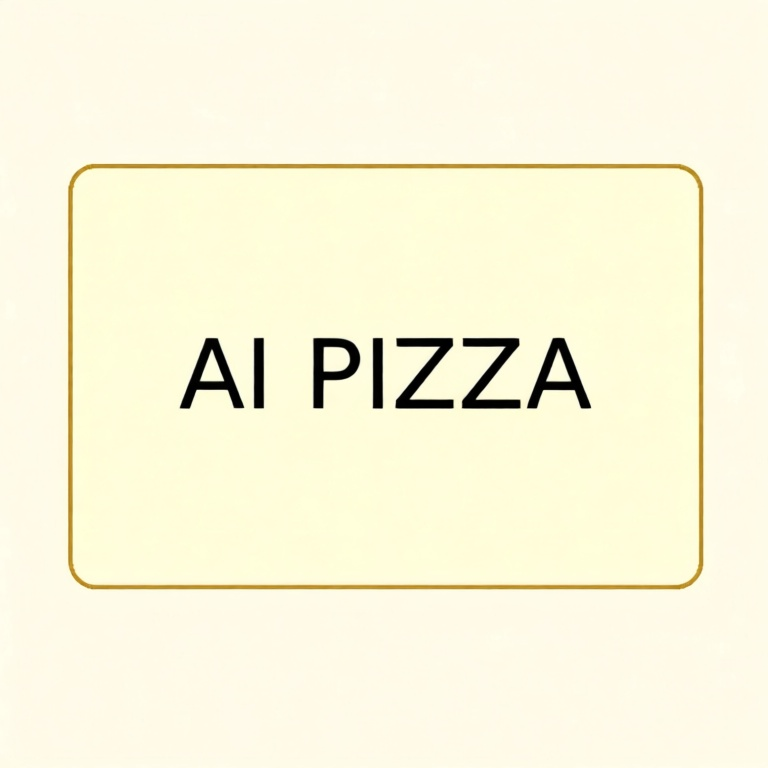
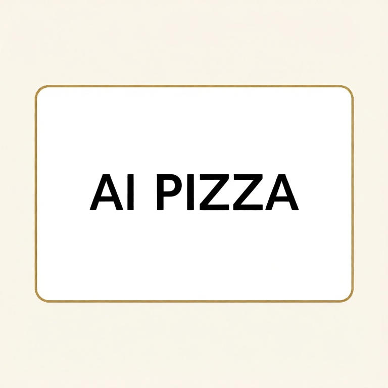
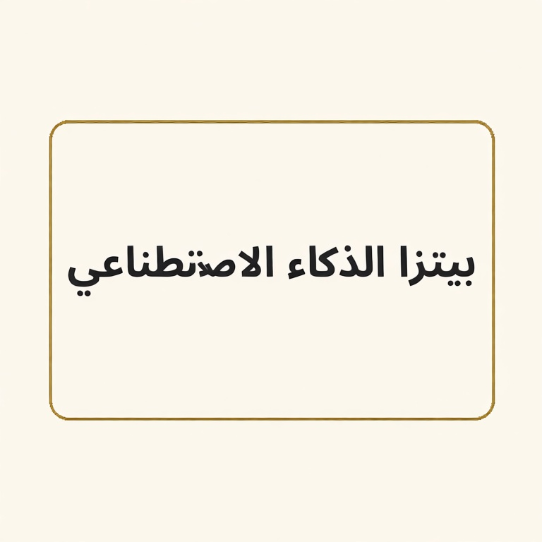
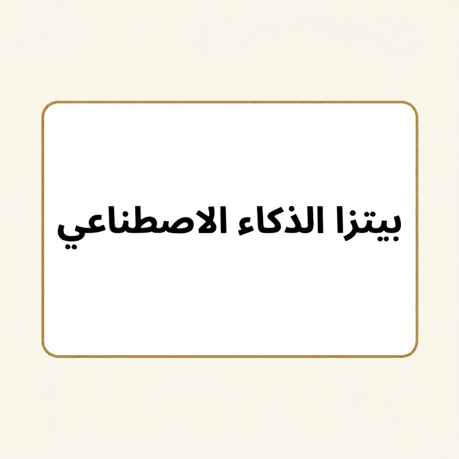
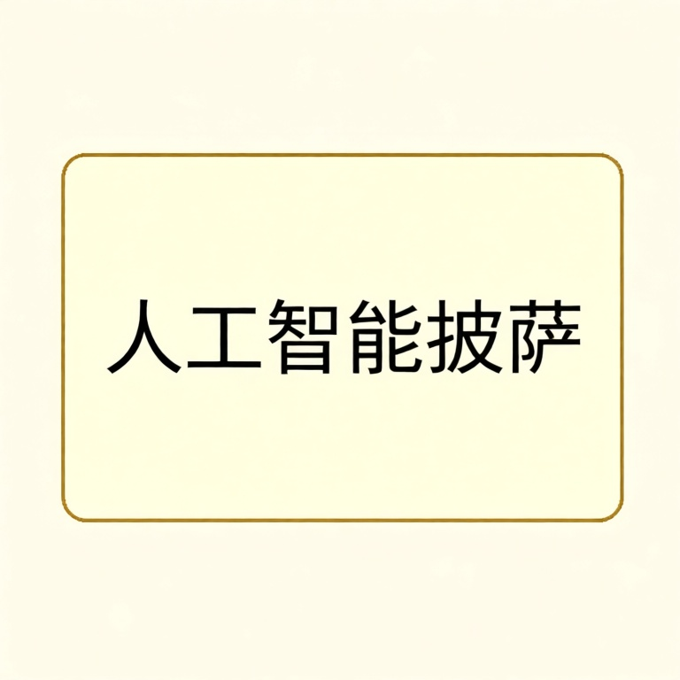
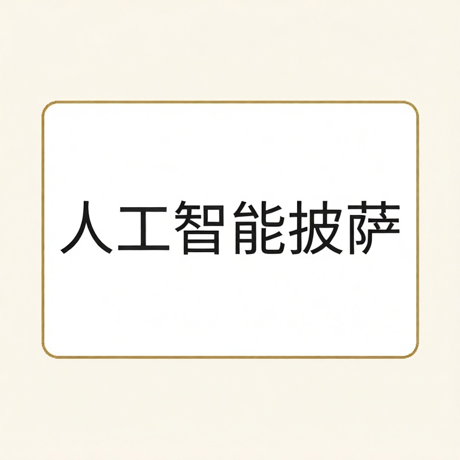

Experiment 03: Reference Glyph Copy
Tests whether already-rendered reference glyphs help Qwen copy or preserve exact text.
Observed Result
This is the key positive control. When the exact Arabic glyphs are provided visually, Qwen can preserve and copy the Arabic text cleanly. That argues against the VAE or image latent path being fundamentally unable to represent Arabic; the weak point is more likely text-conditioned glyph synthesis.
Contact Sheet

Individual Outputs

English copy glyph reference to blank
target: AI PIZZA
seed 94101
target: AI PIZZA
seed 94101

English preserve existing text
target: AI PIZZA
seed 94102
target: AI PIZZA
seed 94102

Arabic copy glyph reference to blank
target: بيتزا الذكاء الاصطناعي
seed 94101
target: بيتزا الذكاء الاصطناعي
seed 94101

Arabic preserve existing text
target: بيتزا الذكاء الاصطناعي
seed 94102
target: بيتزا الذكاء الاصطناعي
seed 94102

Chinese copy glyph reference to blank
target: 人工智能披萨
seed 94101
target: 人工智能披萨
seed 94101

Chinese preserve existing text
target: 人工智能披萨
seed 94102
target: 人工智能披萨
seed 94102
Prompts
Download CSV for this experiment
| Case | Seed | Prompt |
|---|---|---|
| English copy glyph reference to blank | 94101 | Edit Image 1 by writing exactly "AI PIZZA" centered on the card. Use Image 2 only as the visual glyph reference for the exact text shapes and order. Preserve the blank cream card and border. No other text, no logo, no watermark. |
| English preserve existing text | 94102 | Preserve the exact existing text "AI PIZZA" and make the card slightly cleaner and sharper. Do not change any letters, language, order, or spelling. No other text, no logo, no watermark. |
| Arabic copy glyph reference to blank | 94101 | Edit Image 1 by writing exactly "بيتزا الذكاء الاصطناعي" centered on the card. Use Image 2 only as the visual glyph reference for the exact text shapes and order. Preserve the blank cream card and border. No other text, no logo, no watermark. |
| Arabic preserve existing text | 94102 | Preserve the exact existing text "بيتزا الذكاء الاصطناعي" and make the card slightly cleaner and sharper. Do not change any letters, language, order, or spelling. No other text, no logo, no watermark. |
| Chinese copy glyph reference to blank | 94101 | Edit Image 1 by writing exactly "人工智能披萨" centered on the card. Use Image 2 only as the visual glyph reference for the exact text shapes and order. Preserve the blank cream card and border. No other text, no logo, no watermark. |
| Chinese preserve existing text | 94102 | Preserve the exact existing text "人工智能披萨" and make the card slightly cleaner and sharper. Do not change any letters, language, order, or spelling. No other text, no logo, no watermark. |
Review Note
These observations come from visual review of the rendered outputs, not OCR. Exact automated scoring should be added later with a text-aware evaluator.